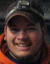

Evapotranspiration:
A Critical Component of the Alaskan Water Cycle and Climate Change
A Critical Component of the Alaskan Water Cycle and Climate Change
Preparatory Science for NASA's planned HyspIRI Mission
| Managing Partners |
David Toll, Deputy Program Manager in Water Management at NASA GSFC Hydrological Sciences Branch, is the NASA Technical Monitor for this project. His research interest is in remote sensing based studies; in areas of hydrology, microclimatology, and environmental science; specifically application and improvement of the modeling; remote sensing of land surface water and energy fluxes; and the application of remote sensing technology for water resources applications. David Toll is reachable by email at David.L.Toll@nasa.gov.
Dr. Denise Thorsen is the Director of the Alaska Space Grant Program (ASGP) and Alaska's NASA EPSCoR Program. She serves as the Managing PI for all projects funded by NASA EPSCoR in the State of Alaska. Dr. Thorsen is an Associate Professor in the Department of Electrical and Computer Engineering at UAF. For details on her research interests and complete CV check out this website. She is reachable by phone at 907-4747052 or by email at denise.thorsen@alaska.edu.
| Project PIs |
Dr. Anupma Prakash is a Professor in Remote Sensing at the Geophysical Institute (GI) and at UAF's Department of Geology and Geophysics (DGG). Her research interest is in using multisensor remote sensing data for mapping surface composition and change in Arctic and sub-Arctic Alaska. Her expertise is in thermal infrared remote sensing and imaging spectroscopy. She serves as a member of the science study group for NASAs planned Hyperspectral InfraRed Imager (HyspIRI) mission. She teaches courses in remote
sensing and GIS at UAF. For more information visit www.gi.alaska.edu/~prakash or contact her at prakash@gi.alaska.edu.
Dr. Javier Fochesatto is a Research Associate Professor at the Geophysical Institutes Atmospheric Sciences Research Group. He received an Electronic Engineering degree in 1991 from Argentina and a Ph.D in Physics in 2000 from France. His expertise is in lidar remote sensing of atmospheric boundary layer and aerosols and he leads the GIs lidar observatory. Dr. Fochesatto's research interest is in micrometeorology and studying boundary layer dynamics using traditional and new instrumentation. For more information on his research and teaching visit www.gi.alaska.edu/~foch or contact him at foch@gi.alaska.edu.
Dr. Rudiger Gens is a Remote Sensing Scientist at the Alaska Satellite Facility (ASF) at UAF and specializes in processing and applications of Synthetic Aperture Radar (SAR) data. He teaches courses on the principles and applications of SAR and InSAR. His interest is also in tools development for processing multisensor data, especially SAR data. Dr. Gens is leading the data processing efforts for several diverse projects including but not limited to remote sensing based mapping of sea ice, earthquake liquefaction, wetlands, and permafrost features. For more information on his research and teaching visit www.gi.alaska.edu/~rgens or contact him at rgens@alaska.edu.
Dr. Douglas Kane is a Professor of Water Resources and Civil Engineering and is a renowned Arctic Hydrologist. He is the former Director of UAFs Water and Environmental Research Center (WERC), and the former Director of UAFs Institute of Northern Engineering (INE). His research interests span a broad range of topics in the fields of groundwater hydrology, snow hydrology, hydraulics, water resources engineering, cold regions hydrology, fish hydraulics, heat transfer, and climate change. For details on his research interests and complete CV visit his website or contact him at dlkane@alaska.edu.
| USDA Collaborators |
Dr. Martha Anderson is Research Physical Scientist at USDA-ARS Hydrology and Remote Sensing Laboratory in Beltsville, Maryland. Water, energy and carbon flux mapping at field to continental scales using thermal remote sensing is one among her many research interests. Dr. Anderson is the primary USDA collaborator for Alaska's NASA EPSCoR ET project and is providing the modeling expertise for this project. For more information visit her website or contact her at Martha.Anderson@ars.usda.gov.
Dr. William (Bill) Kustas is Research Hydrologist and the research leader of the Hydrology and Remote Sensing Laboratory, USDA-ARS, in Beltsville, Maryland. He works closely with Dr. Anderson and has published extensively in the area of ET mapping and modeling. He and his group have extended considerable in-kind support for Alaska's NASA EPSCoR ET project. For more information on Bill's research interests and publications visit his website or contact him at Bill.Kustas@ars.usda.gov.
Dr. Joseph Alfieri is Research Physical Scientist at USDA-ARS Hydrology and Remote Sensing Laboratory in Beltsville, Maryland. His research interest is in on understanding land-atmosphere interactions and their role in the larger earth systems. Dr. Alfieri brings his expertise and experience on in-situ instrumentation installation to this project and is assisting with field site selection and flux tower set-up in interior Alaska. For more information visit his website or contact him at Joe.Alfieri@ars.usda.gov
| Post-Doc and Students |
Dr. Jordi Cristobal completed his PhD on actual evapotranspiration and energy fluxes estimation by means of GIS modeling and Remote Sensing in Catalonia (NE Iberian Peninsula) using medium and coarse spatial resolution sensors from the Autonomous University of Barcelona where he is now an adjuct faculty. Dr. Cristobal is the Post-Doctoral Fellow for Alaska's NASA EPSCoR ET project. He is reachable by phone at 907 4741522 or by email at jordi.cristobal@gi.alaska.edu

Wesley Schaefer is an undergraduate student working on the ET project. As a liberal arts student whose focus is on communincations, Wes brings a unique set of expertise. He is assisting the PIs with overall project coordination, and working with the diverse researchers on site selection, resource mobilization and stream-lining field logistics. Being an Alaskan resident, Wes is well adapted to both summer and winter challenges in interior Alaska. He is reachable by phone at 907 4746839 or by email at wesley.schaefer@gmail.com
John Mumm is a graduate student at UAFs Institute of Northern Engineering. He is working toward his MSc. degree in Hydrology with a focus on evapotranspiration estimation in the Imnavait Creek Basin, Alaska North Slope. Though not directly funded by NASA funds, John is supported by Project Co-PI Dr. Doug Kane, and his research is closely related to this project. His research is an example on how we are leveraging resources at UAF. John is reachable by phone at 907 4745396 or by email at jpmumm@gmail.com
Erin Trochim is a graduate student at UAF pursuing an interdisciplinary (Remote Sensing & Hydrology) PhD degree program. Erin is funded by the NASA Earth and Space Science Fellowship (NESSF) Program and is characterizing water tracks in headwater drainage basins of the Alaskan Arctic. As part of this research she is also investigating the differences in ET between the water
tracks and non water track areas in the Imnvait basin. She is reachable by phone at 907 4741157 or by email at edtrochim@alaska.edu